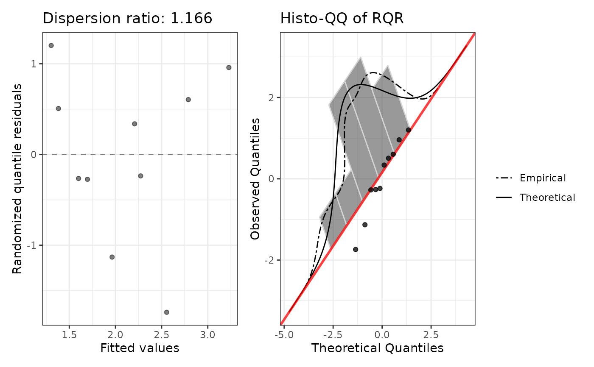

Fits a quasi-Poisson GLM via stats::glm(family = quasipoisson()) and
returns exponentiated coefficients with quasi-likelihood Wald 95% CIs, the
estimated dispersion parameter (phi), Pearson dispersion ratio, and
diagnostic plots. Quasi-Poisson shares the Poisson mean structure but
estimates a free scale parameter so that Var(Y) = phi * mu.
Arguments
- formula
A model formula (e.g.
y ~ x1 + x2). The response must be a non-negative integer count variable.- data
A data frame containing the variables in
formula.- maxit
Optional integer; maximum IWLS iterations passed through as
control = stats::glm.control(maxit = maxit). Ignored when the user supplies their owncontrolvia....- ...
Additional arguments passed to
stats::glm().
Value
An object of class c("quasiPoissonGLM", "countGLMfit"), a list
with:
callThe matched call.
modelThe underlying stats::glm fit object.
summaryThe result of
summary()on the fitted model.phiThe estimated quasi-likelihood dispersion parameter (
summary(fit)$dispersion).coefficientsA data frame with columns
term,exp.coef,lower.95,upper.95,p.value, andstars. Standard errors (and hence CIs and p-values) are inflated bysqrt(phi)relative to a Poisson fit.diagnosticsA list with:
rqrNumeric vector of randomized quantile residuals, computed from the Poisson CDF evaluated at the fitted means (quasi-Poisson shares the Poisson mean structure).
dispersion_ratioPearson chi-squared / df.residual, equal to
phi.plotPatchwork ggplot: fitted vs RQR and histo-QQ. The dispersion-ratio label in the title equals
phi.r2_plotSquared Pearson residuals vs fitted values.
aicNA_real_. Quasi-likelihood fits do not have a proper likelihood, so AIC is undefined.bicNA_real_. BIC is also undefined for quasi-likelihood fits.
Details
Coefficient interpretation: Identical to Poisson regression;
exponentiating a coefficient gives the multiplicative change in the expected
count for a one-unit increase in the predictor. The point estimates match
poissonGLM() exactly — only the standard errors differ.
When to use: Quasi-Poisson is appropriate when a Poisson fit shows
mild-to-moderate overdispersion that appears constant across the range
of fitted values — i.e. the squared Pearson residuals form a roughly flat
cloud with mean phi > 1, rather than fanning out with the fitted mean
(which would motivate negbinGLM()). countGLM() automatically fits
quasi-Poisson when the Poisson dispersion ratio exceeds 1.2 and the r²
vs fitted plot is approximately flat above 1.
No AIC/BIC: Because quasi-Poisson is a quasi-likelihood method, AIC
and BIC are not defined and are returned as NA. Quasi-Poisson therefore
does not participate in the likelihood-based comparison performed by
countGLM(); it is reported alongside the main comparison when flagged.
Examples
df <- data.frame(
y = c(0L, 1L, 2L, 3L, 5L, 0L, 2L, 4L, 1L, 3L),
x1 = c(1.2, -0.4, 0.8, -1.1, 2.0, 0.3, -0.9, 1.5, -0.2, 0.7)
)
fit <- quasiPoissonGLM(y ~ x1, data = df)
#> Warning: Count component: 8 events (y > 0) for 1 predictor(s) (8.0 per predictor). At least 10 events per predictor is recommended.
print(fit)
#>
#> Call:
#> quasiPoissonGLM(formula = y ~ x1, data = df)
#>
#> Model family: quasiPoissonGLM
#>
#> Coefficients (on response scale):
#> term exp.coef lower.95 upper.95 p.value stars
#> (Intercept) 1.7989 0.9279 3.4873 0.0750 .
#> x1 1.3396 0.7597 2.3622 0.2687
#>
#> Dispersion (phi): 1.1658
#> Dispersion ratio: 1.1658
#> AIC: NA (quasi-likelihood)
plot(fit)
